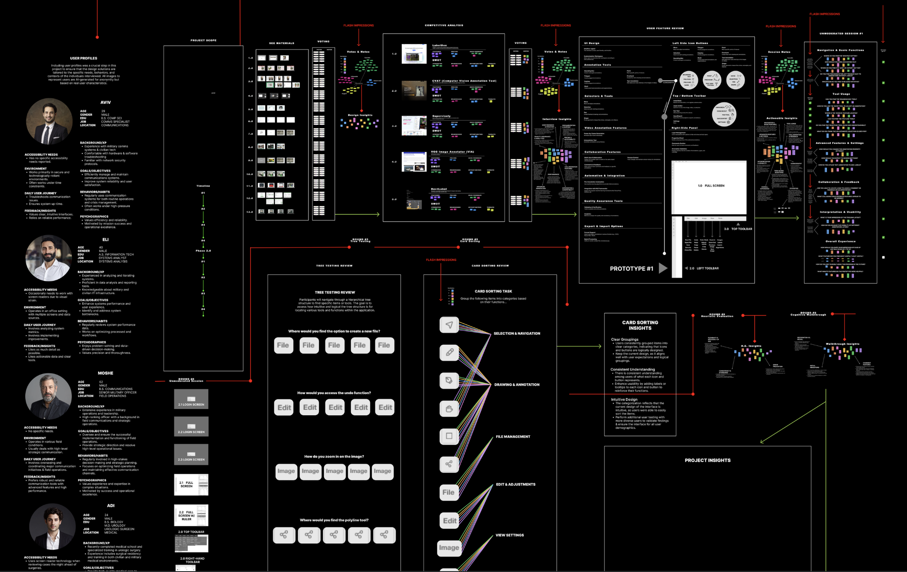
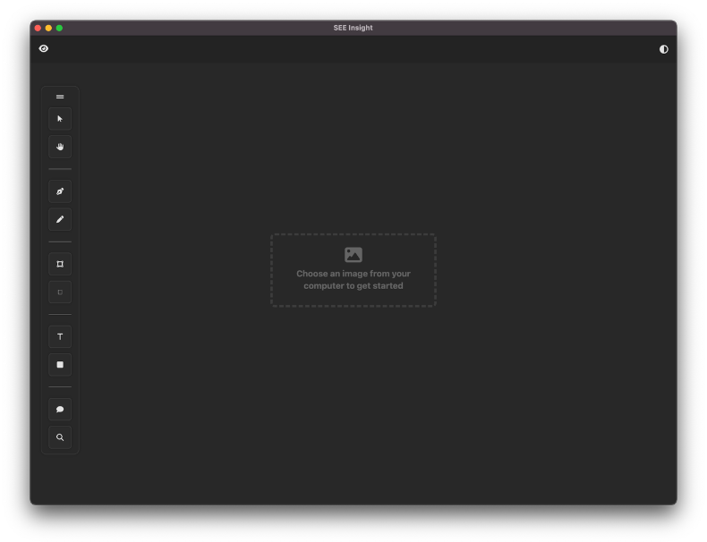
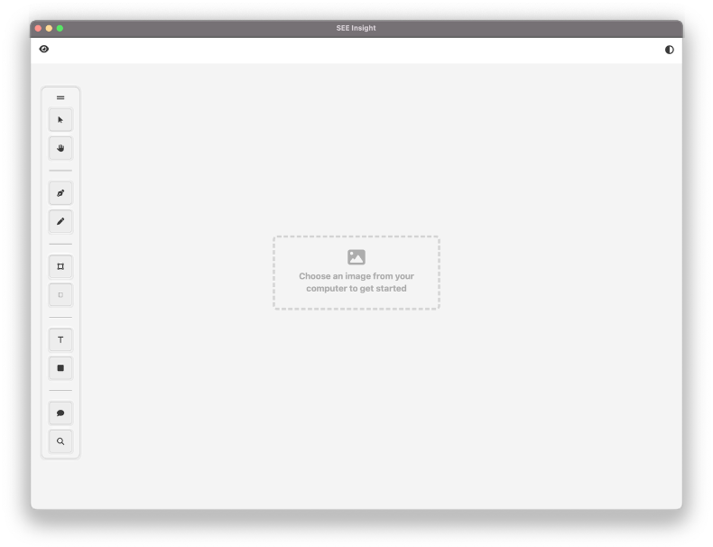

Frontend Development
- HTML
- CSS
- JavaScript

Add your project description here.

As part of my thesis, I collaborated with my professor and the SEE-Insights team from the Department of Computational Mathematics, Science, and Engineering (CMSE) to contribute to the development of an AI image segmentation tool aimed at enhancing scientific image analysis. This tool, designed for researchers and engineers, leverages machine learning to annotate and analyze scientific images. Building on the foundational research from previous thesis classes and my prior work with the SEE-Insights team, I focused on designing and developing the front-end user interface (UI) of the application, ensuring it was intuitive and functional for users in both light and dark modes.
Throughout the project, I worked closely with the SEE-Insights team, participating in regular meetings to provide progress updates, receive feedback, and refine our work. Key Insights: Regular feedback from the SEE-Insights team and my professor helped me make improvements to the UI, ensuring it was both user-friendly and consistent. Working with the research team gave me a deeper understanding of the needs of scientific researchers, allowing me to make design decisions that were both practical and effective in the context of real-world scientific image analysis.

Goal: Develop the front-end code for the UI based on the Figma prototype and user research, ensuring functionality and smooth interaction..

Approach: Using Visual Studio Code (VS Code), I wrote clean, maintainable front-end code using HTML, CSS, and JavaScript, implementing interactive elements.
Outcome: The code I developed was fully functional, meeting the project’s requirements, and was integrated smoothly.
This project resulted in a functional and user-friendly front-end for the AI image segmentation tool, which was an essential component of the broader SEE-Insights initiative. This project provided me with the opportunity to bridge the gap between design, user research, and front-end development. Working with a research team on a real-world application was an incredibly rewarding experience that deepened my understanding of the technical and user-centered aspects of design. I’m excited to continue developing my skills and contributing to innovative, impactful projects.

